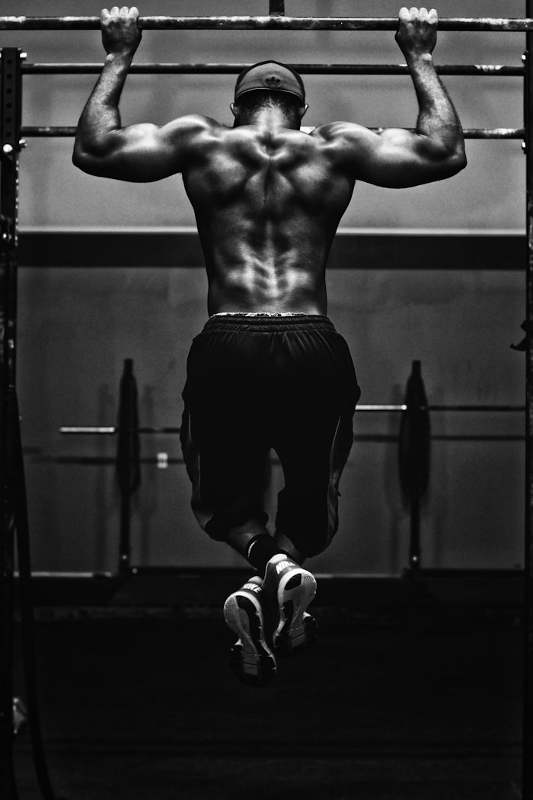
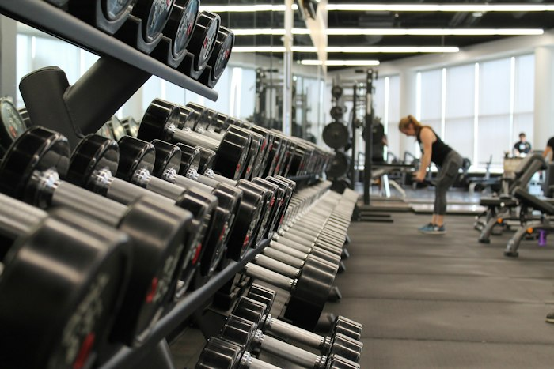
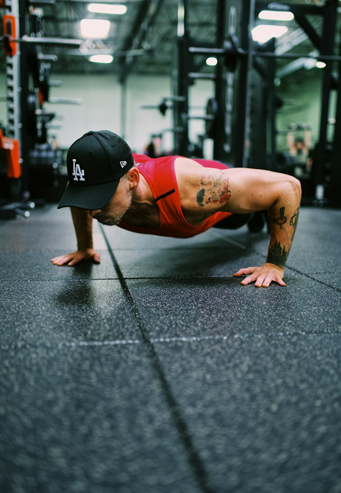
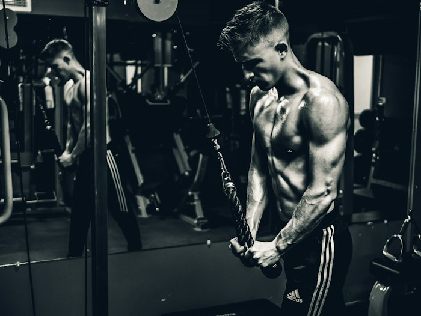
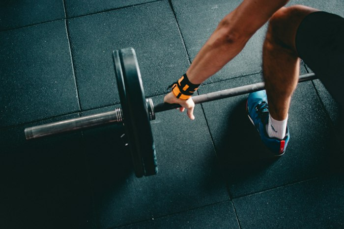

Targeted Muscle Anatomy & Biomechanics
To sculpt a symmetrical, injury-resistant physique, you must move beyond generic body part labels. Here, we dissect the exact subdivisions of each primary muscle group — including upper, middle, and lower chest fibers, distinct deltoid and arm heads, and lower body kinetic drivers. Each targeted muscle is displayed with real training photography and direct links to its recommended exercises.
1. Chest: Targeted Subdivisions
The pectoralis major is anatomically compartmentalized into three primary functional zones based on fiber origin and recruitment angles:

Upper Chest (Clavicular Head)
Origin: Anterior medial clavicle.
Fiber Angle: 30–45 degree diagonal trajectory downward toward humerus.
Function: Shoulder flexion and upward horizontal adduction.

Middle Chest (Sternal Head)
Origin: Sternal manubrium and body.
Fiber Angle: Horizontal transverse fibers directly across the torso.
Function: Pure horizontal adduction (bringing arms together across the chest).

Lower Chest (Abdominal Head)
Origin: Costal cartilage of true ribs 5–7 & external oblique fascia.
Fiber Angle: Upward and lateral trajectory toward upper arm.
Function: Downward and forward arm adduction.
2. Legs: Targeted Subdivisions
The lower limbs contain distinct multi-joint functional complexes:
Quadriceps (Anterior Thigh — 4 Heads)
Components: Rectus Femoris, Vastus Lateralis (outer sweep), Vastus Medialis (teardrop), Vastus Intermedius.
Function: Knee extension and anterior hip stabilization during squats and jumps.

Hamstrings (Posterior Thigh)
Components: Biceps Femoris (long & short heads), Semitendinosus, Semimembranosus.
Function: Knee flexion and hip extension during hinges and sprinting.
Calves (Gastrocnemius & Soleus)
Components: Gastrocnemius (superficial two-headed diamond) and Soleus (deep postural muscle).
Function: Ankle plantarflexion and athletic push-off force.
3. Biceps: Targeted Subdivisions
Arm thickness and vertical peak rely on distinct heads of the anterior upper arm:

Biceps Long Head (Peak)
Origin: Supraglenoid tubercle of the scapula.
Biomechanics: Traverses the bicipital groove; maximally stretched when elbows are positioned behind the torso.
Aesthetic: Forms the tall vertical bicep peak.

Biceps Short Head (Inner Width)
Origin: Coracoid process of the scapula.
Biomechanics: Best recruited when arms are held in front of the body with wrists fully supinated.
Aesthetic: Provides inner arm fullness and thickness.

Brachialis (Deep Arm Wedge)
Location: Deep muscle directly beneath the lower biceps.
Biomechanics: Operates at maximum leverage when using a neutral or hammer grip.
Aesthetic: Pushes biceps upward, increasing arm circumference.
4. Triceps: Targeted Subdivisions
All three heads insert onto the olecranon process of the ulna, but origin differences alter head recruitment:
Triceps Lateral Head (Horseshoe)
Location: Lateral surface of the posterior upper arm.
Biomechanics: Heavily recruited during pushdowns with pronated hands.
Aesthetic: Creates the iconic lateral horseshoe sweep.

Triceps Long Head (Inner Mass)
Origin: Infraglenoid tubercle of the scapula.
Biomechanics: The largest head; requires arms elevated overhead for full eccentric lengthening.
Aesthetic: Supplies the vast majority of rear upper arm volume.

Triceps Medial Head (Lockout Power)
Location: Deep posterior humerus near the elbow joint.
Biomechanics: Active across all extension angles; locks out heavy bench presses.
Aesthetic: Densifies the lower triceps above the elbow.
5. Shoulder: Targeted Subdivisions
The deltoid complex consists of three distinct pennate heads that require independent isolation:

Anterior Deltoid (Front Delt)
Origin: Anterior border of the lateral third of the clavicle.
Biomechanics: Raises arm forward in the sagittal plane.
Function: Compound overhead pressing and horizontal pushing assistance.

Lateral Deltoid (Side Delt — Width)
Origin: Acromion process of the scapula.
Biomechanics: Pure frontal plane arm abduction.
Aesthetic: The #1 driver of upper-body shoulder width and V-taper frame.

Posterior Deltoid (Rear Delt)
Origin: Spine of the scapula.
Biomechanics: Horizontal arm abduction and external glenohumeral rotation.
Function: Scapular balance and prevention of rounded posture.
6. Back: Targeted Subdivisions
The posterior chain is partitioned into width-generating and thickness-generating components:
Latissimus Dorsi (Lats — Width)
Origin: Spinous processes of T7–L5, thoracolumbar fascia, iliac crest.
Biomechanics: Adducts and extends the humerus downward into the ribs.
Aesthetic: Creates the classic back wings and wide taper.

Trapezius & Rhomboids (Thickness)
Components: Superior, middle, and inferior trapezius plus rhomboids.
Biomechanics: Retracts and elevates scapulae.
Aesthetic: Creates 3D muscular density between shoulder blades.

Erector Spinae (Lower Back Pillars)
Components: Spinalis, Longissimus, and Iliocostalis columns.
Biomechanics: Resists spinal flexion under axial deadlift loads.
Function: Core armor and heavy lift stabilization.
Connect Targeted Muscles to Prescribed Workouts
Now that you have seen all targeted muscles pictured with their anatomical roles, view the recommended exercise protocols!
Explore Recommended Workouts →